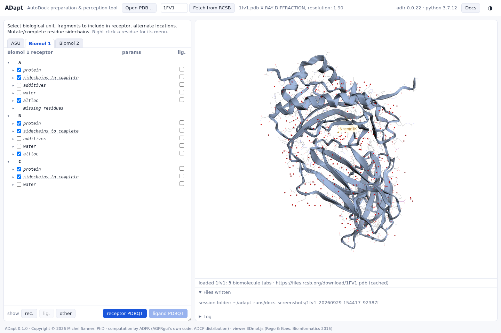

Choosing between assemblies of one file
1FV1: the asymmetric unit holds two copies of the same complex. They are not equally complete.
Entry 1FV1 was solved by X-ray diffraction at 1.90 Å. Its asymmetric unit has six chains and defines two biological assemblies, so ADapt shows three tabs:
- ASU: chains A to F;
- Biomol 1: chains A, B and C;
- Biomol 2: chains D, E and F.
The two assemblies are the same complex, but the experiment did not see them equally well. Before docking, choose the one whose problems are fewest, or farthest from the pocket.


ADapt's tree gives the comparison at a glance. For 1FV1:
| Chain | Side chains to complete | Residues with alternate locations | Missing residues |
|---|---|---|---|
| A | 4 | 2 | N-terminus: IK |
| B | 13 | 1 | - |
| C | 2 | - | - |
| Biomol 1 | 19 | 3 | |
| D | 2 | 3 | N-terminus: IKE |
| E | 11 | 1 | - |
| F | - | - | N-terminus: N; C-terminus: Q |
| Biomol 2 | 13 | 4 |
Biomol 2 has fewer incomplete side chains. The totals are only a start: what matters is where the problems are. Expand a category and click its residues to see them in the 3D view, next to the site you intend to dock into. The side chains and alternate locations pages continue with Biomol 2.